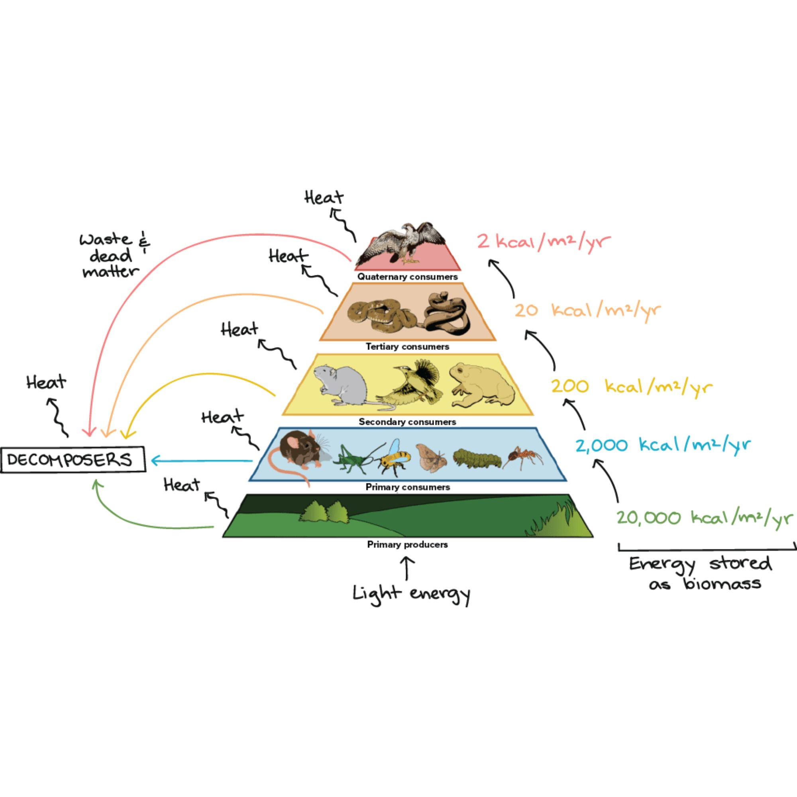

Welcome to your interactive biology module. In this activity, you will master how energy and biomass circulate through ecosystems.
Course Instructions:
You must read the information in each section carefully.
Complete the "Try It Yourself" interactive activities to unlock the next section.
A green check mark in the sidebar indicates a section is finalized.
Final Mastery Quiz requires a 70% (7/10) to earn your certificate.
Food Chains vs. Food Webs
A Food Chain follows a single path as animals eat each other (e.g., Grass → Rabbit → Fox). A Food Web shows how multiple food chains overlap, representing the true complexity of an Ohio forest or pond.

The Trophic Levels:
Producers (Autotrophs): Level 1. Capture solar energy (e.g., Algae, Corn).
Primary Consumers: Level 2. Herbivores that eat producers (e.g., Grasshopper).